10
Serial UART Programming
You should already be fairly familiar with the serial interface. You use it when you program your Arduino board, and you also use it to communicate with the Serial Monitor to send data back and forth to the Arduino from your computer. You do this through the Arduino’s USB-to-serial adapter or directly with the serial adapter. Interfacing directly is often referred to as TTL Serial, or just Serial. TTL is a reference to Transistor Transistor Logic, a now redundant technology that used 5V logic levels.
Serial communication, of this kind, is not a bus. It is point-to-point communication. Only two devices are involved—generally an Arduino and a peripheral.
Peripherals that use TTL Serial rather than I2C or SPI tend to be larger devices or devices that have been around for a long time and traditionally always had a TTL Serial interface. This also includes devices originally intended to be connected to the serial port of a PC. Examples include GPS modules, multimeters with data logging features, and barcode and RFID readers.

Serial Hardware
Figure 10-1 shows the serial hardware for the Arduino Uno.
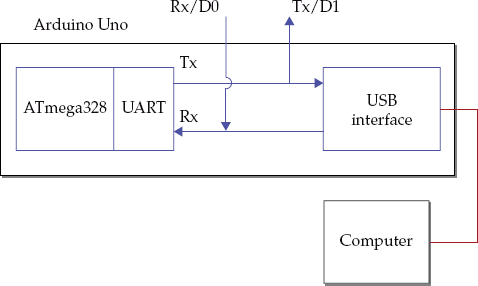
Figure 10-1 Arduino Uno serial hardware
The ATmega328 on the Arduino Uno has two pins Rx and Tx (Receive and Transmit, respectively). These also double as pins D0 and D1, but if you use them as general I/O pins, you will probably find that you cannot program your Arduino while they are attached to external electronics.
These Rx and Tx pins are the serial interface of the hardware Universal Asynchronous Receiver Transmitter (UART) on the ATmega328. This part of the microcontroller is responsible for sending and receiving bytes of data from and to the microcontroller.
The Uno has a separate processor that acts as a USB-to-serial interface. As well as electrical differences in the serial signal, the USB bus also has a much more complicated protocol than serial and so it does a fair bit of work behind the scenes so it appears the serial port of the ATmega328 is communicating directly with your computer.
The Arduino Leonardo does not have a separate chip to act as an USB interface; rather it uses an ATmega chip that includes two UARTs and a built-in USB interface (Figure 10-2).
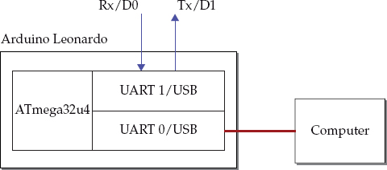
Figure 10-2 Arduino Leonardo serial hardware
One of the UARTs is dedicated to the USB interface and the other is connected to the Rx and Tx pins (D0 and D1). This gives you the advantage of connecting the Tx and Rx to other electronics and still being able to program the Arduino and send data to the Serial Monitor.
Other Arduino boards have differing quantities and arrangements of serial ports. These are summarized in Table 10-1. Note that the Due is alone among Arduino boards in operating its serial ports at 3.3V rather than 5V.
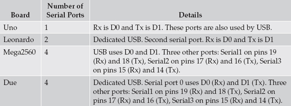
Table 10-1 UART Serial Interfaces by Arduino Board
TTL Serial has a relatively short range (a few feet or perhaps tens of feet), especially if you use it at a high baud rate. For communicating over longer distances, an electrical standard called RS232 has been defined. Until perhaps the last decade, you could commonly find PCs with RS232 serial ports. The RS232 standard changes the signal levels, making them more suitable for traveling a greater distance than with TTL Serial.
Serial Protocol
The Serial protocol and much of the terminology around it dates back to the early days of computer networking. Both the sender and receiver have to agree on a speed at which to exchange data. This speed, called the baud rate, is set at both ends before communication begins. The baud rate is the number of signal transitions per second, which would be the same as the number of bits per second, were it not for the fact that a byte of data may have start, end, and parity bits. So, as a rough approximation, if you divide the baud rate by 10, you’ll know about how many bytes per second you can transfer.
Baud rates are selected from a number of standard baud rates. You may have seen these on the Serial Monitor drop-down list on the Arduino IDE. The baud rates used by the Arduino software are: 300, 1200, 4800, 9600, 14400, 19200, 28800, 38400, 57600, and 115200 baud.
The most commonly used baud rate for the Arduino is probably 9600, which tends to be the default baud rate. There is no particularly good reason for this as the Arduino communicates reliably at 115200 baud. For projects that require really fast data transfer, this rate will be used. Another common rate is 2400 baud. Some peripherals such as Bluetooth serial adaptors and GPS hardware use this rate.
Another rather confusing Serial connection parameter that you might encounter is a string of characters like this: 8N1. This string means 8 bits per packet, No parity checking, and 1 stop bit. Although other combinations are possible, any device that you are likely to encounter will be 8N1.
The Serial Commands
The Serial commands are not contained in a library, so you do not need an include command in your sketch.
Start serial communication using the command Serial.begin, which takes the baud rate parameter:
This is typically called just once in the setup function.
If you are using a board that has more than one serial port, and if you are using the default port (port 0), you just use the Serial.begin command. If you are using one of the other ports, however, then put the number after the word Serial. For example, to start communication on serial port 3 on an Arduino Due, you would write the following in your sketch:
Once Serial.begin has been called, the UART will listen for incoming bytes and automatically store them in a buffer, so even if the processor is busy doing other things, the bytes will not be lost as long as the buffer does not overflow.
Your loop function can check for incoming bytes of data using the Serial.available function. This function returns the number of bytes available for reading. If no bytes are available, then it returns 0. This equates to “false” in C, so you will often see code like this that tests for available data:
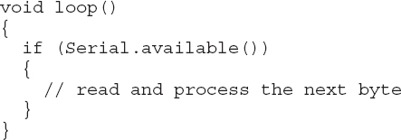
The read command takes no arguments and simply reads the next available byte from the buffer.
The readBytes function reads available bytes into a buffer within the sketch, as opposed to the buffer used by the UART. It takes two arguments: the buffer to fill (this should be a reference to an array of bytes) and the maximum number of bytes to read. This argument can be useful if you have a project that needs to send variable length strings to the Arduino. In general, it is better to avoid this, however, and try to make any communication to an Arduino of a fixed length and as simple as possible.
The parseInt and parseFloat functions can be convenient, as they allow strings sent to the Arduino to be read as numbers into int and float variables, respectively.
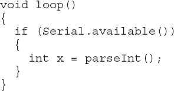
Both functions read characters until they run out or reach a space or other nonnumeric character and then turn the string into a numeric value.
Before using functions like parseInt and parseFloat, make sure you understand why you are doing this. I have seen code that people have written converting an int into an array of characters, that sends the array of characters to a second Arduino, which then turns the array back into an int. There are a number of reasons why this is not a good idea:
• It is unnecessary. Serial communication sends binary just fine. All that is required is to send the upper and lower bytes of the int, putting them into the upper and lower bytes of a new int on receipt.
• Converting numbers into strings and vice versa is slow.
• The serial link may be passing six characters of data (including the null terminator) rather than the 2 bytes of an int.
If the device you are interfacing with is outside of your control and the designer’s protocol uses strings to hold numbers, or has variable length fields of data, then these functions can be useful. Otherwise, if the protocol is completely under your control, make life easy for yourself and avoid the unnecessary complexity of converting types and variable-length messages of different formats.
The examples in the “Serial Examples” section, later in this chapter, also serve as templates for designing your own communication code.
Serial has a lot of functions, many of which you’ll never need to use. The most handy have been covered here. For the rest, please refer to the Arduino Serial documentation here: http://arduino.cc/en/Reference/Serial.
The SoftwareSerial Library
Sometimes, especially when using an Arduino Uno, having just one serial port is not enough. The SoftwareSerial library allows you to use almost any pair of pins for serial communication, but with a few limitations:
• You can only receive data from one SoftwareSerial port at a time.
• You may have trouble using it if your sketch uses timer or external interrupts.
The functions available mirror those of Serial and, in some respects, are better thought out. SoftwareSerial includes support for serial communication for devices that use inverted signals, such as the MaxSonar rangefinders. You also create a SoftwareSerial object for each connection, which is cleaner than the standard Arduino approach of putting a number after the word Serial.
Table 10-2 shows the pin allocations you can use with SoftwareSerial for the Uno and Leonardo boards. If you are using a bigger board with four hard serial ports, you are unlikely to need SoftwareSerial. Unless prefixed with an A, the pin numbers refer to digital pins.
Table 10-2 Pin Usage for SoftwareSerial by Arduino Board
When starting a SoftwareSerial connection, specify the Rx and Tx pins as the two parameters when creating a SoftwareSerial object. Then use begin with a baud rate as a parameter to start communication:
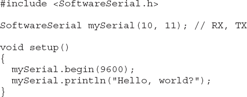
You can find full documentation for the SoftwareSerial library here: http://arduino.cc/en/Reference/SoftwareSerial.
Serial Examples
This section includes a mix of UART and SoftwareSerial usage examples.
Computer to Arduino over USB
This first example uses the Serial Monitor to send commands to an Arduino. The Arduino will also send analog readings from A0 once per second, while, at the same time, looking for single-character incoming messages of g for “go” or s for “stop” to control the flow of readings. Figure 10-3 shows the Serial Monitor while this sketch is running.
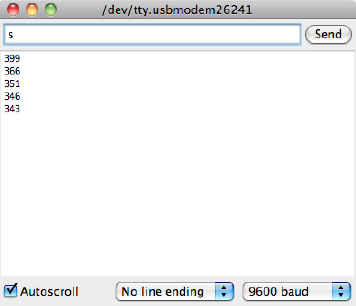
Figure 10-3 The Serial Monitor communicating with Arduino
In this situation, because the readings from the Arduino are going to be displayed directly in the Serial Monitor window, the readings may as well be sent as text rather than binary.
Here is the sketch for this example:
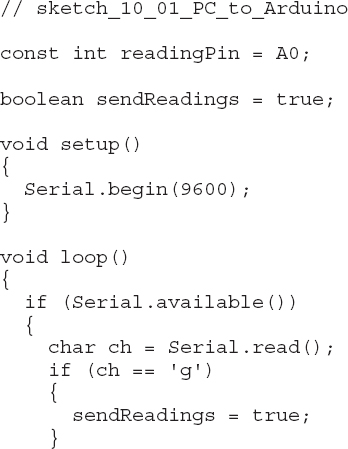
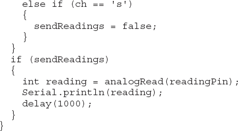
The loop tests for incoming serial data, and if there is any, it reads one byte as a character. This byte is then compared to the ‘s’ and ‘g’ commands and a status variable, ‘sendReadings’, is set accordingly.
The sendReadings variable is then used to determine if the reading should be made and then printed. If the ‘sendReadings’ flag is true, then there is a second delay before the next reading is sent.
Using delay means that sendReadings can only be changed the next time around the loop. This is not a problem for this sketch, but in other circumstances you might need a better solution that does not block the loop. See Chapter 14 for more discussion on this kind of thing.
Arduino to Arduino
This second example illustrates the sending of data from one Arduino Uno to another over a serial connection. In this case, readings from A1 of one Arduino are transmitted to the second Arduino, which then uses them to control the flashing rate of the built-in “L” LED.
The Arduinos are wired together as shown in Figure 10-4.
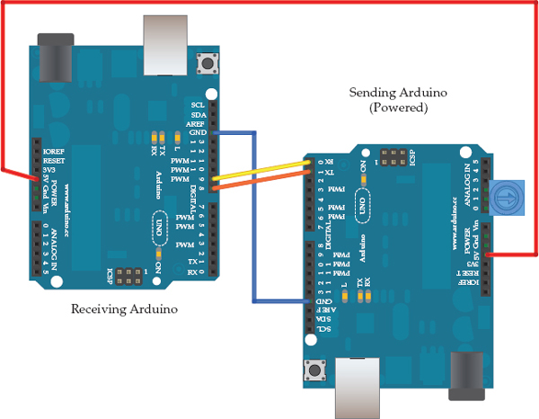
Figure 10-4 Two Arduino Unos communicating over serial
One Arduino’s Tx should be connected to the Rx of the other and vice-versa. In this example, both the Arduinos are using the SoftwareSerial library with pin 8 used as Rx and pin 9 as Tx.
The GND connections of the two Arduinos need to be connected, as do the 5V pins as you want to use the sending Arduino to power the receiving Arduino. The sending Arduino has a trimpot (small variable resistor) pushed into pins A0 to A2. By setting A0 and A2 to be outputs and then setting A2 HIGH, you can vary the voltage at A1 between 0 and 5V by rotating the knob on the trimpot to control the flashing rate of the LED on the other Arduino.
The sending Arduino’s sketch is shown here:
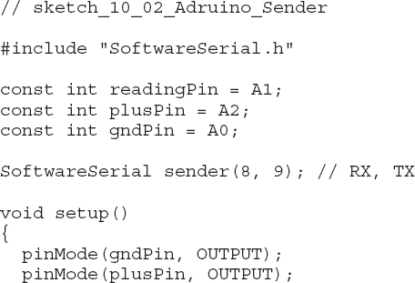
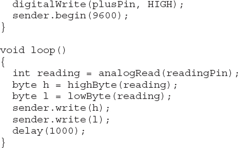
To send the 16 bit (int) reading, the reading is split into high and low bytes and each byte is then sent over the serial link using write. Whereas print and println convert their argument into a string of characters, write sends the byte as binary.
Here is the receiving code:
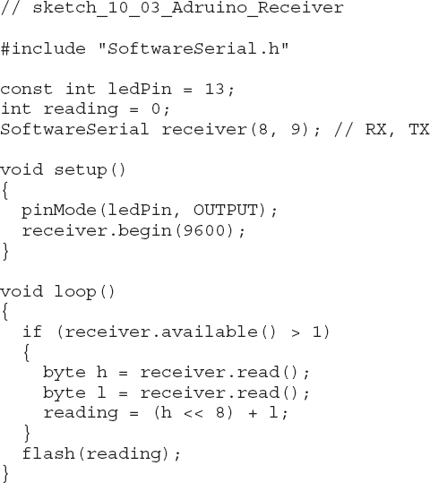
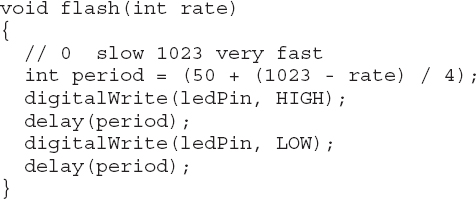
The receiving code must wait until at least 2 bytes are available and then reconstruct the int reading by pushing the high byte up to the top 8 bits of the int and then adding the low byte.
If you are considering sending more complex data from one Arduino to another, then you might like to look at the EasyTransfer library: www.billporter.info/2011/05/30/easytransfer-arduino-library/.
Although this example uses wires to connect the Tx for one Arduino to the Rx of another, you could almost accomplish this as easily with wireless connections. Many wireless modules operate transparently, in other words, as if the serial ports were connected by wires.
GPS Module
The final serial communication example reads positional information (latitude and longitude) from a Global Positioning System (GPS) module using TTL Serial, which then formats the data and sends it to the Serial Monitor (Figure 10-5).
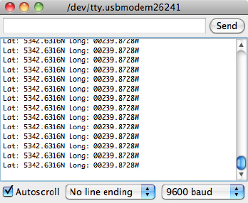
Figure 10-5 GPS readings on an Arduino
The communication with the GPS module is one way, so only the Tx output of the module needs to be connected to an Rx pin on an Arduino. The module used is a Sparkfun Venus GPS module (www.sparkfun.com/products/11058). Like most GPS modules, it has TTL Serial output and will send out a burst of messages once a second at 9600 baud.
The messages conform to a standard called National Marine Electronics Association (NMEA). Each message is a string of text, ending with the newline character. The fields of the message are separated by commas. A typical message is shown here:
The fields in the example are as follows:
• $GPRMC The sentence type
• 081019.548 The time (very accurate) and in 24-hour format. 8:10:19.548
• 5342.6316, N Latitude × 100, that is, 53.426316 degrees North
• 00239.8728,W Longitude × 100, that is, 0.2398728 degrees West
• 000.0 Speed
• 079.7 Course 79.7 degrees
• 110613 Date 11 June 2013
The remaining fields are not relevant to this example.
NOTE You can find a complete list of the NMEA GPS sentences listed here: http://aprs.gids.nl/nmea/.
Here is the code for this example:
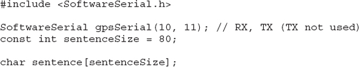
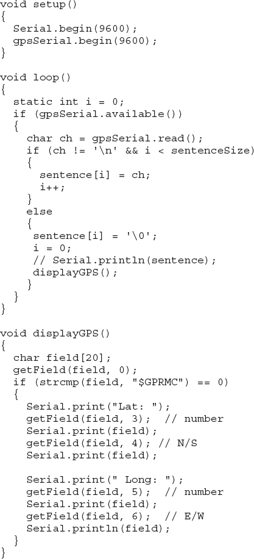
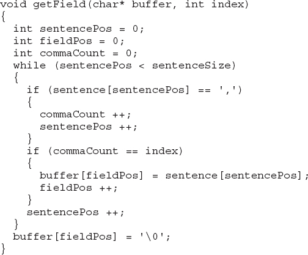
The sentences coming from the GPS module are of differing lengths, but are all less than 80 characters, so the code uses a buffer variable sentence that is filled with the data until an end-of-line marker is read or the buffer is full.
A C null character is placed on the end of the buffer when the whole sentence has been read. This is only so that if you wish, you can “print” the sentence to see the raw data.
The rest of the sketch is concerned with extracting individual fields and formatting the output to be written to the Serial Monitor. The getField function helpfully extracts the text from a field at a particular index.
The displayGPS function first ignores any sentences that are not of the type “$GPRMC” and then extracts the latitude and longitude and hemisphere fields to be displayed.
Summary
In this chapter, we investigated a few ways to program serial communications between Arduinos, peripherals, and computers.
In the next chapter, we’ll turn our attention to an interesting property of the Arduino Leonardo that allows it to emulate USB peripherals such as a keyboard and mouse. We will also look at other aspects of USB Programming.